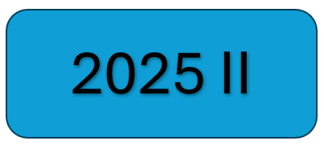

Matemáticas Fundamentales
Los resultados de aprendizaje para esta asignatura son:
- Grafica y analiza funciones reales y es capaz de aplicar el concepto a su entorno profesional.
- Calcula límites y determina bajo que condiciones una función es continua a partir del concepto de límite.
- Calcula derivadas y es capaz de aplicar este concepto a su entorno profesional.
Nota: Esta asignatura es el pilar de la matemática universitaria. Por lo tanto, es indispensable estudiar adecuadamente cada tema de esta asignatura. Si desean volver a estudiar un tema que no fue claro, pueden usar las grabaciones de clases anteriores, las cuales las pueden consultar en mi página de wordpress, haciendo clic aquí. Ó también, si lo desean, pueden consultar vídeos cortos sobre temáticas específicas haciendo clic aquí.
CONTENIDO
Unidad 1. Sistemas Numéricos, Conjuntos y Álgebra Básica
- Sistemas Numéricos: Naturales, Enteros, Racionales, Irracionales, Reales y Complejos
- Operaciones y propiedades sobre los sistemas numéricos: enteros, racionales y complejos
- Orden de los números reales. Valor absoluto y propiedades.
- Conjuntos y diagramas de Venn
- Potenciación y radicación
- Polinomios y operaciones básicas
- Productos notables
- Triángulo de Pascal y Teorema del Binomio
- Teoremas del resto y del factor. Ceros de un polinomio
- Teorema Fundamental del Álgebra.
Apuntes de clase: Unidad 1
Unidad 2. Ecuaciones e inecuaciones
- Ecuaciones lineales y cuadráticas
- Ecuaciones polinómicas de grado superior
- Inecuaciones lineales
- Inecuaciones no lineales: polinómicas y racionales
- Inecuaciones con valor absoluto
Apuntes de clase: Unidad 2
Unidad 3. Geometría Analítica: Cónicas
- Plano cartesiano, distancia entre dos puntos y punto medio
- Circunferencia: definición, ecuación general y canónica, centro y radio
- Elipse: definición, ecuación general y canónica, centro, semiejes mayor y menor
- Hipérbola: definición, ecuación general y canónica, centro, semiejes real e imaginario
- Parábola: definición, ecuación general y canónica, vértice, foco y directriz
Apuntes de clase: Unidad 3
Taller para Quiz 1: PDF.
Taller para Quiz 2: PDF.
Taller para Quiz 3: PDF.
Taller para Quiz 4: PDF.
Unidad 4. Funciones de una variable real
- Conceptos: Función, dominio, rango, función par e impar
- Clasificación de funciones reales
- Composición de funciones. Función inversa
- Funciones polinómicas:
- Función lineal
- Función cuadrática
- Funciones irracionales. Definición y traslaciones
- Función exponencial: definición y traslaciones
- Función logarítmica: definición y traslaciones
- Ecuaciones exponenciales y logarítmicas
- Funciones hiperbólicas: definición
- Trigonometría:
- El círculo trigonométrico y relaciones trigonométricas
- Identidades y ecuaciones trigonométricas
- Resolución del triángulos y aplicaciones:
- Teorema de Pitágoras
- Teorema del seno y del coseno
- Gráfica de funciones trigonométricas. Funciones senoidales
- Funciones trigonométricas inversas
- Funciones racionales
Apuntes de clase: Unidad 4
Unidad 5. Límites y continuidad
- Definición intuitiva de límite
- Límites laterales. Propiedades de los límites
- Cálculo de límites mediante método analítico
- Límites infinitos y en el infinito
- Límites especiales
- Continuidad en un punto y en un intervalo
Apuntes de clase: Unidad 5
Unidad 6. Derivadas
- Definición de derivada mediante el límite
- Interpretación geométrica de la derivada: recta tangente
- Derivadas de funciones elementales
- Reglas de derivación: suma-resta, producto y cociente
- Regla de la cadena
- Derivadas de funciones implícitas y logarítmicas
- Derivadas de orden superior
Apuntes de clase: Unidad 6
👉 Tutor IA
Referencias bibliográficas
- ZILL, D., & DEWAR, J. Álgebra y Trigonometría, 4 o Edición.
- Swokowski, E. W. (2009). Álgebra y trigonometría con geometría analítica.
- Lehmann, C. H. (1959). Geometría analítica. Mexico: Union Tipografica Edition Hispano Americana.
- Larson, R. E., & Edwards, B. H. (2010). Cálculo 1 de una variable.
